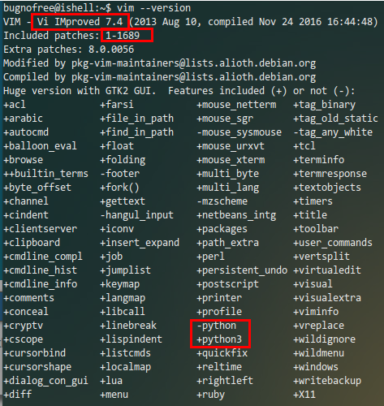
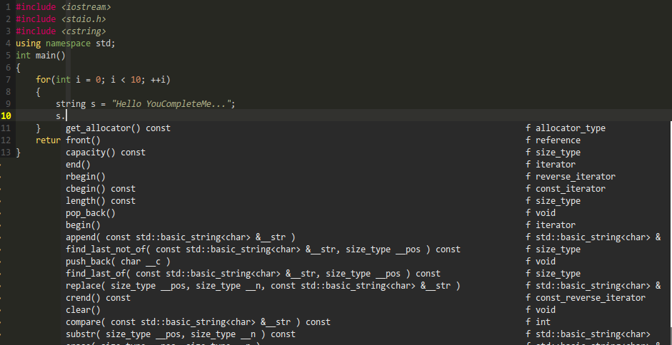
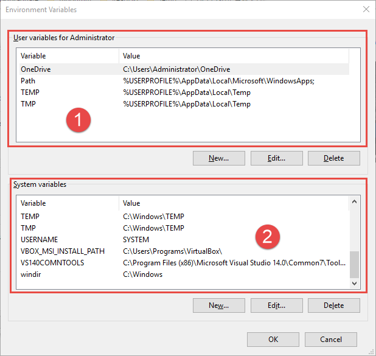

Linux主机:Ubuntu 16.04 x64
在命令行中输入vim --version,我的输出如图1: 
wget http://releases.llvm.org/3.9.1/clang+llvm-3.9.1-x86_64-linux-gnu-ubuntu-16.04.tar.xz
tar -Jxvf clang+llvm-3.9.1-x86_64-linux-gnu-ubuntu-16.04.tar.xz
cd clang+llvm-3.9.1-x86_64-linux-gnu-ubuntu-16.04/
sudo cp -r * /usr/local #将对应的文件拷贝到/usr/local中的对应目录
clang --version #测试安装
clang version 3.9.1 (tags/RELEASE_391/final)
Target: x86_64-unknown-linux-gnu
Thread model: posix
InstalledDir: /usr/local/bin
如果你开个代理,应该会下载的快一些.
安装依赖项:
sudo apt-get install cmake sudo apt-get install python-dev python3-dev
然后执行一下命令:
#创建编译目录
cd ~/.vim
mkdir ycm_build
cd ycm_build
#生成makefiles,这里LLVM参数指定clang位置,我安装位置/usr/local
cmake -G "Unix Makefiles" -DPATH_TO_LLVM_ROOT=/usr/local . ~/.vim/bundle/YouCompleteMe/third_party/ycmd/cpp
#成功的输出如下:
-- The C compiler identification is GNU 5.4.0
-- The CXX compiler identification is GNU 5.4.0
-- Check for working C compiler: /usr/bin/cc
-- Check for working C compiler: /usr/bin/cc -- works
-- Detecting C compiler ABI info
-- Detecting C compiler ABI info - done
-- Detecting C compile features
-- Detecting C compile features - done
-- Check for working CXX compiler: /usr/bin/c++
-- Check for working CXX compiler: /usr/bin/c++ -- works
-- Detecting CXX compiler ABI info
-- Detecting CXX compiler ABI info - done
-- Detecting CXX compile features
-- Detecting CXX compile features - done
-- Found PythonLibs: /usr/lib/x86_64-linux-gnu/libpython2.7.so (found suitable version "2.7.12", minimum required is "2.6")
Using libclang to provide semantic completion for C/C++/ObjC
Using external libclang: /usr/local/lib/libclang.so.3.9
-- Found PythonInterp: /usr/bin/python2.7 (found version "2.7.12")
-- Looking for pthread.h
-- Looking for pthread.h - found
-- Looking for pthread_create
-- Looking for pthread_create - not found
-- Looking for pthread_create in pthreads
-- Looking for pthread_create in pthreads - not found
-- Looking for pthread_create in pthread
-- Looking for pthread_create in pthread - found
-- Found Threads: TRUE
-- Configuring done
-- Generating done
-- Build files have been written to: /home/bugnofree/.vim/ycm_build
#编译
cmake --build . --target ycm_core
#成功的输出部分如下:
...
[ 83%] Linking CXX static library libBoostParts.a
[ 83%] Built target BoostParts
Scanning dependencies of target ycm_core
[ 84%] Building CXX object ycm/CMakeFiles/ycm_core.dir/CandidateRepository.cpp.o
[ 84%] Building CXX object ycm/CMakeFiles/ycm_core.dir/Utils.cpp.o
[ 85%] Building CXX object ycm/CMakeFiles/ycm_core.dir/Result.cpp.o
[ 86%] Building CXX object ycm/CMakeFiles/ycm_core.dir/LetterNode.cpp.o
[ 86%] Building CXX object ycm/CMakeFiles/ycm_core.dir/PythonSupport.cpp.o
[ 88%] Building CXX object ycm/CMakeFiles/ycm_core.dir/IdentifierUtils.cpp.o
[ 89%] Building CXX object ycm/CMakeFiles/ycm_core.dir/versioning.cpp.o
[ 89%] Building CXX object ycm/CMakeFiles/ycm_core.dir/LetterNodeListMap.cpp.o
[ 90%] Building CXX object ycm/CMakeFiles/ycm_core.dir/ClangCompleter/Documentation.cpp.o
[ 91%] Building CXX object ycm/CMakeFiles/ycm_core.dir/ClangCompleter/CompilationDatabase.cpp.o
[ 91%] Building CXX object ycm/CMakeFiles/ycm_core.dir/ClangCompleter/CompletionData.cpp.o
[ 92%] Building CXX object ycm/CMakeFiles/ycm_core.dir/ClangCompleter/TranslationUnit.cpp.o
[ 92%] Building CXX object ycm/CMakeFiles/ycm_core.dir/ClangCompleter/ClangHelpers.cpp.o
[ 94%] Building CXX object ycm/CMakeFiles/ycm_core.dir/ClangCompleter/Range.cpp.o
[ 95%] Building CXX object ycm/CMakeFiles/ycm_core.dir/ClangCompleter/ClangUtils.cpp.o
[ 95%] Building CXX object ycm/CMakeFiles/ycm_core.dir/ClangCompleter/TranslationUnitStore.cpp.o
[ 96%] Building CXX object ycm/CMakeFiles/ycm_core.dir/ClangCompleter/ClangCompleter.cpp.o
[ 97%] Building CXX object ycm/CMakeFiles/ycm_core.dir/Candidate.cpp.o
[ 97%] Building CXX object ycm/CMakeFiles/ycm_core.dir/ycm_core.cpp.o
[ 98%] Building CXX object ycm/CMakeFiles/ycm_core.dir/IdentifierDatabase.cpp.o
[100%] Building CXX object ycm/CMakeFiles/ycm_core.dir/IdentifierCompleter.cpp.o
[100%] Linking CXX shared library /home/bugnofree/.vim/bundle/YouCompleteMe/third_party/ycmd/ycm_core.so
[100%] Built target ycm_core
"YouCompleteMe配置 "默认配置文件路径" let g:ycm_global_ycm_extra_conf = '~/.vim/bundle/YouCompleteMe/third_party/ycmd/cpp/ycm/.ycm_extra_conf.py' "打开vim时不再询问是否加载ycm_extra_conf.py配置" let g:ycm_confirm_extra_conf=0 "让Vim的补全菜单行为与一般IDE一致 set completeopt=longest,menu "python解释器路径" let g:ycm_path_to_python_interpreter='/usr/bin/python' "是否开启语义补全" let g:ycm_seed_identifiers_with_syntax=1 "是否在注释中也开启补全" let g:ycm_complete_in_comments=1 let g:ycm_collect_identifiers_from_comments_and_strings = 0 "开始补全的字符数" let g:ycm_min_num_of_chars_for_completion=2 "补全后自动关闭预览窗口" let g:ycm_autoclose_preview_window_after_completion=1 " 禁止缓存匹配项,每次都重新生成匹配项" let g:ycm_cache_omnifunc=0 "字符串中也开启补全" let g:ycm_complete_in_strings = 1 "离开插入模式后自动关闭预览窗口" autocmd InsertLeave * if pumvisible() == 0|pclose|endif "上下左右键的行为 会显示其他信息 inoremap然后打开.ycm_confirm_extra_conf,你会看到一个flags数组如下:pumvisible() ? "\ " : "\ " inoremap pumvisible() ? "\ " : "\ " inoremap pumvisible() ? "\ \ \ " : "\ " inoremap pumvisible() ? "\ \ \ " : "\ "
flags = [ '-Wall', '-Wextra', '-Werror', '-Wno-long-long', ....省略... './tests/gmock', '-isystem', './tests/gmock/include', ]你可以根据头文件在哪里进行添加,比如下面的,不要忘了最后的逗号.
'-isystem', '/usr/include', '-isystem', '/usr/include/c++/5.4.0', '-isystem', '/usr/include', '/usr/include/x86_64-linux-gnu/c++',
注意每加入一个路径,都要加入一句 '-isystem',
一个简单的效果如图2:
有时候中英文混合书写的时候,YouCompleteMe有时候不会自动弹出补全框,这个时候你可以使用vim自己带的补全工具, 快捷键是 ctrl+n 或者 ctrl+p
Windows主机:Windows 10 x64
进入vimfiles目录(位于$VIM/vimfiles),新建ycm_build目录,然后进入ycm_build目录.执行下面的命令:
cmake -G "Visual Studio 14 2015 Win64" -DPATH_TO_LLVM_ROOT="C:\Users\Programs\LLVM" . "C:\Users\Programs\Vim\vimfiles\bundle\YouCompleteMe\third_party\ycmd\cpp" -DPYTHON_INCLUDE_DIR="C:\Users\Programs\Python3\include" -DPYTHON_LIBRARY="C:\Users\Programs\Python3\libs\python36.lib" -DUSE_PYTHON2=OFF
上面的"Visual Studio 14"可以打开你的 Visual Studio 安装目录,在路径中你可以看到那个 数值,更换为你的即可.成功输出如下:
-- The C compiler identification is MSVC 19.0.24215.1 -- The CXX compiler identification is MSVC 19.0.24215.1 -- Check for working C compiler: C:/Program Files (x86)/Microsoft Visual Studio 14.0/VC/bin/x86_amd64/cl.exe -- Check for working C compiler: C:/Program Files (x86)/Microsoft Visual Studio 14.0/VC/bin/x86_amd64/cl.exe -- works -- Detecting C compiler ABI info -- Detecting C compiler ABI info - done -- Check for working CXX compiler: C:/Program Files (x86)/Microsoft Visual Studio 14.0/VC/bin/x86_amd64/cl.exe -- Check for working CXX compiler: C:/Program Files (x86)/Microsoft Visual Studio 14.0/VC/bin/x86_amd64/cl.exe -- works -- Detecting CXX compiler ABI info -- Detecting CXX compiler ABI info - done -- Detecting CXX compile features -- Detecting CXX compile features - done -- Found PythonLibs: C:/Users/Programs/Python3/libs/python36.lib (found suitable version "3.6.1", minimum required is "3.3") Using libclang to provide semantic completion for C/C++/ObjC Using external libclang: C:/Users/Programs/LLVM/lib/libclang.lib -- Found PythonInterp: C:/Users/Programs/Python3/python.exe (found version "3.6.1") -- Looking for pthread.h -- Looking for pthread.h - not found -- Found Threads: TRUE -- Configuring done -- Generating done -- Build files have been written to: C:/Users/Programs/Vim/vimfiles/ycm_build
现在开始编译:
cmake --build . --target ycm_core --config Release
编译成功后,配置_vimrc,在其中加入:
let g:ycm_global_ycm_extra_conf = 'C:\Users\Programs\Vim\vimfiles\bundle\YouCompleteMe\third_party\ycmd\cpp\ycm\.ycm_extra_conf.py' "打开vim时不再询问是否加载ycm_extra_conf.py配置" let g:ycm_confirm_extra_conf=0 "让Vim的补全菜单行为与一般IDE一致 set completeopt=longest,menu "python解释器路径" let g:ycm_path_to_python_interpreter='C:\Users\Programs\Python3/python.exe' "是否开启语义补全" let g:ycm_seed_identifiers_with_syntax=1 "是否在注释中也开启补全" let g:ycm_complete_in_comments=1 let g:ycm_collect_identifiers_from_comments_and_strings = 0 "开始补全的字符数" let g:ycm_min_num_of_chars_for_completion=2 "补全后自动关闭预览窗口" let g:ycm_autoclose_preview_window_after_completion=1 " 禁止缓存匹配项,每次都重新生成匹配项" let g:ycm_cache_omnifunc=0 "字符串中也开启补全" let g:ycm_complete_in_strings = 1 "离开插入模式后自动关闭预览窗口" autocmd InsertLeave * if pumvisible() == 0|pclose|endif "上下左右键的行为 会显示其他信息 inoremappumvisible() ? "\ " : "\ " inoremap pumvisible() ? "\ " : "\ " inoremap pumvisible() ? "\ \ \ " : "\ " inoremap pumvisible() ? "\ \ \ " : "\ "
然后再.ycm_extra_conf.py中的flags数组中加入如下语句:
'-isystem', 'C:\Program Files (x86)\Microsoft Visual Studio 14.0\VC\include',
wmic 命令可以方便的设置环境变量,wmic environment相当于一个数据库, 该数据库的属性包括8个,分别为:
Caption,Description,InstallDate,Name,Status,SystemVariable,UserName,VariableValue
举两个例子:
<SYSTEM>\Path,<SYSTEM>\Path,Path,OK,TRUE,<SYSTEM>,%SystemRoot%\system32;%SystemRoot% BLABLAHAHAHA\Administrator\TEMP,BLABLAHAHAHA\Administrator\TEMP,TEMP,OK,FALSE,BLABLAHAHAHA\Administrator,%USERPROFILE%\AppData\Local\Temp
以上面的例子来说明这8个属性,Caption指当前环境变量的具体归属, 比如说, <system>\Path 具体指定了系统归属里的 Path 环境变量,而 BLABLAHAHAHA\Administrator\TEMP 则指明了当前用户归属里的 TEMP 环境变量, Description是对当前环境变量的额外描述,但是一般默认情况下和 Caption 一样, InstallDate一般不用,设置为空.Name比较重要,指定了当前归属的环境变量名称, Status一般均设置为OK,SystemVariable指明当前环境变量是否为系统环境变量,如果是, 则为TRUE,若不是则为FALSE.然后是UserName,这个属性比较重要,它从整体上指明了要查询的环境 变量归属范围,最后的属性 VariableValue 指明了环境变量的值.这8个属性我们只需要关注3个, 分别是 UserName,Name,VariableValue
环境变量的归属,一般地我们用的就两个,一个是系统,一个是用户. 系统的名称在 wmic 中总是 <system>,而用户则是当前用户,其名称可以用 whoami 来获得.更直观的,下面是系统自带的GUI环境变量设置界面:
标记1处为环境变量的用户归属,而标记2处为环境变量的系统归属即 <system>. 现在我们可以使用wmic命令来增删改查环境变量了.
增加:
wmic environment create UserName="<system>",name="Hello",VariableValue="World"
修改:
wmic environment where 'UserName="<system>" and name="Hello"' set VariableValue="AnotherWorld"
查询:
wmic environment where 'UserName="<system>" and name="Hello"' get VariableValue
删除:
wmic environment where 'UserName="<system>" and name="Hello"' delete
注意where后面的语句需要用引号括起来,另外,如果UserName中有反斜线,比如说你的当前用户名
字为blablahahaha\administrator,那么你需要写成UserName="blablahahaha\\administrator"才可以.
当我们自己写项目时,可能包含了一些头文件或者包,我们只需要将 .ycm_confirm_extra_conf.conf 拷贝到自己项目的顶级目录下面即可. 无须做任何修改,然后重新启动 vim,就可以补全自己头文件里面的类方法或者包方法.